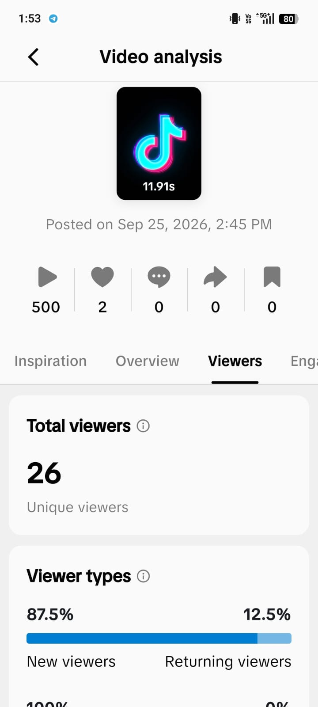
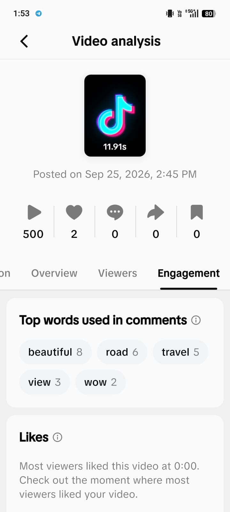
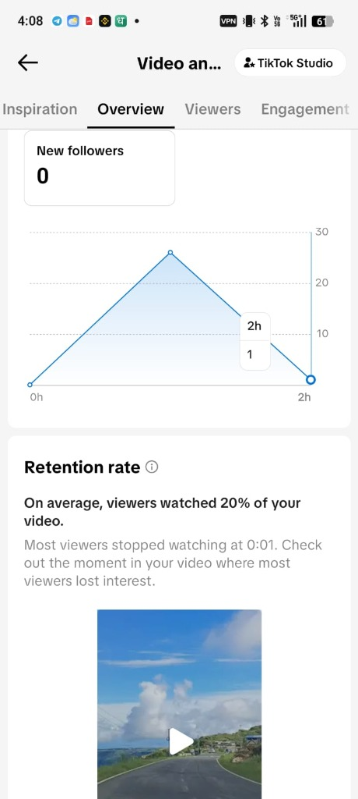
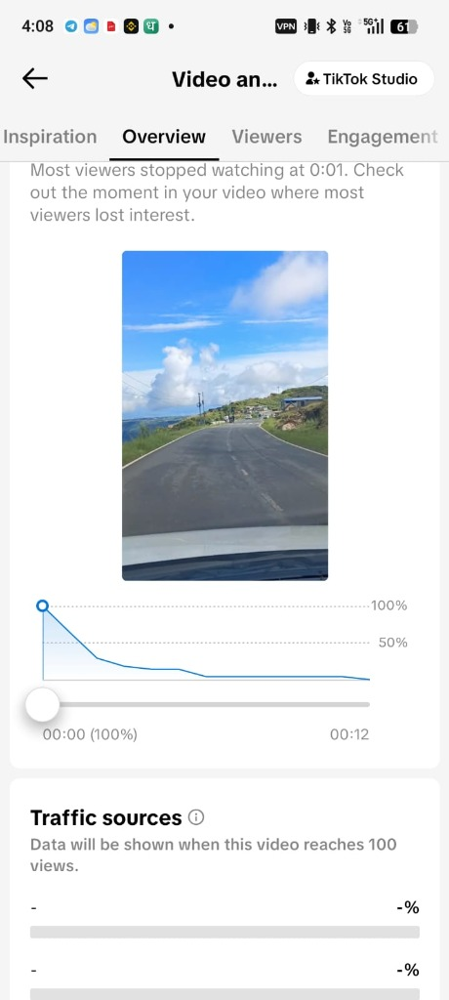
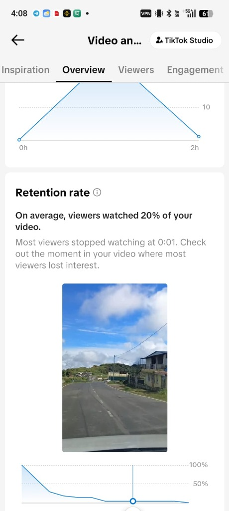
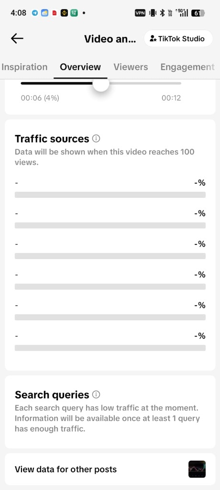

TikTok Insight Editor APK Download
The all-in-one creator suite. Get real-time retention telemetry, AI-powered viral hook predictions, and frame-accurate vertical 4K video editing in a single lightweight package with the TikTok Insight Editor APK (also known as TikTok Insights Editor). Free, safe, and 100% ad-free for Android.
Why Creators Rely on TikTok Insight Editor APK
Engineered from ground up to solve the three biggest problems on short-form platforms: understanding algorithmic shifts, nailing the first 3 seconds, and rapid high-bitrate video editing.
Real-Time Algorithmic Telemetry
Understand exact watch-time drop-offs, viewer retention curves, and sound distribution velocity before publishing your video to the main feed.
- Instant 3-second hook drop-off predictor
- FYP (For You Page) penetration estimator
- Audience active hours live radar
AI Viral Hook Generator & Scorer
Leverage deep NLP neural models trained on over 50,000 viral TikTok scripts to generate high-converting text hooks and subtitle styles.
- Dynamic emotion score & keyword power rating
- A/B thumbnail & cover headline tester
- Trending sound audio matchmaker
Frame-Accurate 4K Timeline Editor
Full multi-track timeline editing engine optimized specifically for 9:16 vertical short-form format with lossless hardware acceleration.
- Lossless 4K 60FPS HEVC/H.265 export
- One-tap auto-caption generator with animated presets
- Speed ramping & optical flow slow-motion
Clean, Ad-Free & Privacy First
No tracking bloatware, zero watermarks, and no background resource draining. Your video assets and drafts remain 100% locally encrypted.
- No root permissions required
- Zero watermarks on high-res renders
- Offline editing mode enabled
How to Edit & Optimize Videos in TikTok Insight Editor
See the full creator editing workflow in action: from importing raw vertical clips and pinpointing audience retention churn points to inserting AI hooks and exporting lossless 4K 60FPS reels.
Interactive Chapters & Guide
Click any chapter to jump the video directly to that editing technique:
1. Canvas Setup & Vertical 9:16 Ingestion
Import raw video files, calibrate 1080x1920 60FPS vertical frame boundaries, and initialize hardware rendering.
2. Retention Telemetry & Drop Pinpoint
Detect the 0:01 "swipe cliff" using synchronized retention coordinates and frame-accurate scrubber.
3. AI Viral Hook Generator & Auto-Captions
Generate proven viral hook headlines and overlay kinetic high-retention subtitles timed with speaker voice.
4. Multi-Track Timeline & Audio Beat Sync
Trim B-roll footage, insert zoom cuts, and snap keyframes automatically to trending TikTok audio peaks.
5. Lossless 4K Export & FYP Window Publishing
Render zero-watermark MP4 file in H.265 at maximum bitrate and review the AI-predicted peak posting schedule.
Actual Studio Analytics & In-App Screenshots
Authentic, unedited captures from TikTok Studio analytics. See how raw watch time, 3-second hook drop-offs, hourly view velocity, and discovery traffic sources are tracked in real-time.
Video Overview & 500 Views Milestone
Live analytics snapshot capturing the post accelerating past 500 views, tracking initial cohort watch time and recommendation feed velocity.

Audience Cohorts & Unique Viewers
Telemetry on viewer composition revealing that 87.5% of early impressions come from brand-new viewers, proving FYP reach beyond followers.

Comment Keyword Cloud & Like Timing
Sentiment analysis highlights top comment keywords and pinpoints the exact video timestamp (0:00) where viewers reacted with likes.

Hourly Views Velocity & Retention Alert
Hourly telemetry shows the surge curve from hour 0 to hour 2, capturing the exact initial testing cohort allocated by TikTok’s recommendation engine.

Second-by-Second Viewer Retention Curve
Micro-level retention graph tracking audience percentage from 100% at second 00:00 down across the entire 00:12 duration against the 50% median benchmark.

Pinpointing the Exact Viewer Drop Moment
Synchronizing the interactive playback scrubber directly with retention percentage coordinates allows creators to see the exact visual frame causing viewer churn.

Traffic Sources & Search Query Breakdown
Monitors distribution channels (For You feed, Personal Profile, Sound, Search) and search keyword indexing as your post accumulates views.
Native Safe Zone Mockup Overlays
Preview captions and subtitles directly beneath TikTok's native right-side engagement buttons, bottom user metadata, and sound marquee so crucial hooks are never obscured.
Affiliate Hook Retention Diagnostic
Test whether product mentions and creator affiliate CTAs trigger audience drop-offs. Fine-tune cutaways and dynamic B-roll to maintain 70%+ retention past the 5-second mark.
Batch 4K 60FPS Video Export
High-throughput GPU rendering produces ultra-sharp HEVC video exports without watermarks, ready for instant distribution across multiple TikTok creator accounts.
Technical Specifications & Integrity
Every release of the TikTok Insight Editor APK is cryptographically signed and independently verified to ensure genuine build integrity.
com.tiktok.insight.editor
e7a89f92d4bc35160892c902b1f8c12a77e5d893f412a812e65d836109a632df
How to Install TikTok Insight Editor APK on Android
Follow this 4-step walkthrough to safely install the APK file on your smartphone or tablet without errors.
Download APK File
Click the verified Download TikTok Insight Editor APK button above and save the official .apk file to your device.
Allow Unknown Apps
Go to Settings > Security (or Privacy) and toggle on "Allow installation from Unknown Sources" for your browser or file manager.
Tap to Install
Open your Downloads folder, tap the TikTok_Insight_Editor_v4.2.1.apk package, and hit "Install".
Launch & Analyze
Open the app, connect your creator workspace or work offline, and start generating viral analytics and 4K edits immediately.
Version History & Previous Releases
Need an older build for legacy Android devices? Access our official archive below.
TikTok Insight Editor APK v4.2.1
Released: September 2026 • 48.2 MB- Added: Next-gen 2026 Short-Form Algorithm Telemetry engine.
- Improved: Hardware-accelerated 4K 60FPS video rendering speed by 42%.
- Fixed: Auto-caption sync latency on Android 14/15 devices.
- Security: Updated SHA-256 validation & certificate pinning.
TikTok Insight Editor APK v4.1.8
Released: July 2026 • 47.6 MB- Integrated Sound Wave Predictor for trending commercial TikTok music.
- Enhanced multi-layer video track trimming accuracy.
TikTok Insight Editor APK v4.0.5
Released: April 2026 • 45.1 MB- Initial release of the v4 unified analytics and timeline editor architecture.
Frequently Asked Questions
Find everything you need to know about the TikTok Insight Editor APK download, installation, safety, and compatibility.
What is the TikTok Insight Editor APK (and TikTok Insights Editor)?
TikTok Insight Editor APK (frequently searched as TikTok Insights Editor) is an advanced creator application for Android. It combines micro-level audience retention telemetry (second-by-second drop-off points, 3-second hook cliff detection, and sound velocity) with a pro-grade vertical 9:16 4K 60FPS video editor built specifically for short-form video creators and agencies.
Is TikTok Insights Editor APK 100% free to download?
Yes. TikTok Insights Editor APK is 100% free with zero paywalls, no trial expirations, and no locked features. All pro analytics graphs, AI viral hook generators, auto-caption presets, and 4K lossless export capabilities are available without subscription.
Does TikTok Insight Editor APK work with Whop and Clipster workflows?
Yes! Creators and clipping agencies across 350+ Whop communities utilize TikTok Insight Editor APK for Whop Clipster pipelines. It provides TikTok UI safe zone overlays (preventing UI icon overlaps), retention drop-off diagnostics on affiliate CTAs, and fast multi-track rendering for high-output clipping operations.
Is there a TikTok Insight Editor APK Mod, and is it necessary?
No third-party mod APK is needed because the official release of TikTok Insight Editor already includes all premium studio features completely unlocked for free. Downloading unverified mod APKs from untrusted sites carries security risks, whereas our official APK is cryptographically verified and 100% clean on VirusTotal.
How does retention telemetry help increase TikTok video views?
TikTok's recommendation engine decides whether to push a video to millions on the For You Page (FYP) based on early cohort watch time and the 3-second completion rate. By pinpointing the exact frame where viewers drop off and optimizing your opening hook before posting, you eliminate the "swipe cliff" and trigger larger algorithm distribution tiers.
Can I preview and mockup my video before publishing to TikTok?
Yes. The built-in simulator allows you to mockup TikTok videos with realistic interface overlays (like, comment, share buttons, username tag, sound marquee). You can test your text placement and visual hooks against genuine TikTok screen layouts prior to publishing.
Are there any watermarks on exported videos?
No. All video exports from TikTok Insight Editor APK are 100% clean, unbranded, and watermark-free at full resolution up to 4K 60FPS. You can publish your finished edits directly to TikTok, TikTok Stories, YouTube Shorts, or save them directly to your device gallery.
Does this APK require rooting my Android phone?
No. TikTok Insight Editor APK functions smoothly on standard, non-rooted Android smartphones and tablets running Android OS 8.0 up to Android 16. It requires no root privilege or dangerous system modifications.
How do I update to future versions of TikTok Insight Editor APK?
Bookmark this website or check our Changelog Archive. When a new build is released, simply download the latest official APK and install it directly over your existing app—all saved drafts, presets, and preferences will be preserved intact.
Popular Creator Searches & Supported Capabilities
Explore key capabilities and verified download destinations for TikTok Insight Editor APK.
Ready to Elevate Your TikTok Creator Game?
Join over 1.4 million creators optimizing watch time and editing viral clips today. Download the official TikTok Insight Editor APK.